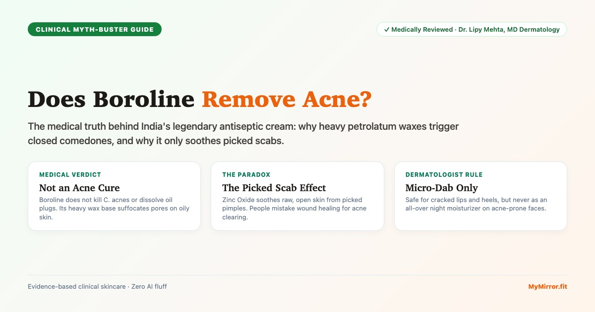
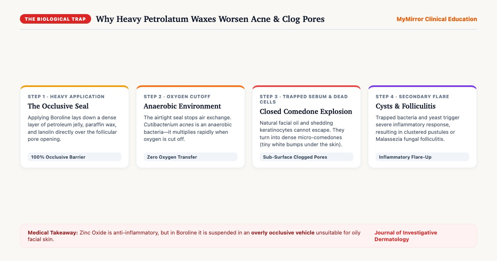
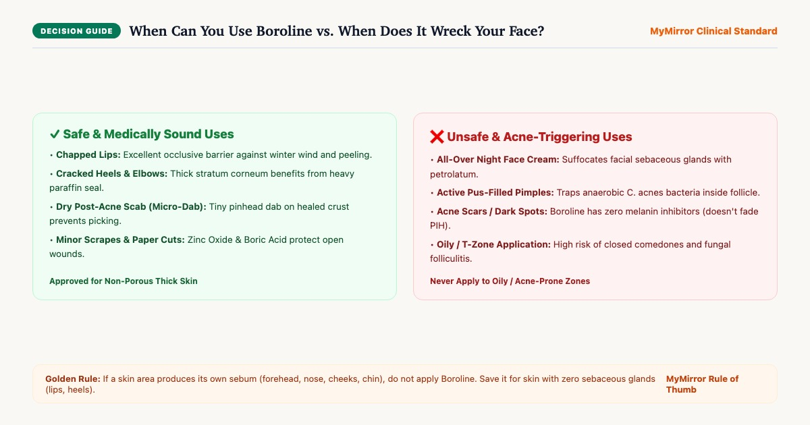
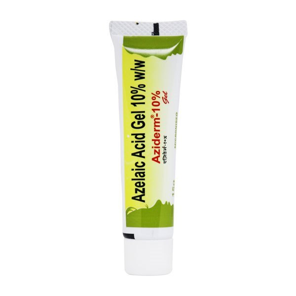

The Anatomy of Boroline: What is Inside the Green Tube?
Created in Kolkata in 1929 by Gourmohon Dutta, Boroline has earned a legendary place in Indian households as an Ayurvedic antiseptic ointment. It has soothed millions of cracked elbows, paper cuts, and chapped winter lips for nearly a century. But to understand why it behaves unpredictably on facial acne, we have to examine its chemical formula:
1. The Active Mineral Ingredients
- Zinc Oxide (Jasad Bhasma): A renowned mild astringent and physical protectant. Zinc oxide is clinically recognized for reducing superficial inflammation, reflecting UV rays, and stimulating epidermal re-epithelialization (scab repair)[1].
- Boric Acid (Tankan Bhasma / Acidum Boricum): A mild antibacterial and antifungal agent traditionally used to prevent superficial wound infections in minor scrapes and cuts.
2. The Heavy Occlusive Vehicle (The Problem for Pores)
The active minerals in Boroline make up only a small fraction of the formula. The remaining bulk is composed of dense, water-repelling waxes and oils:
- White Petroleum Jelly (Petrolatum): The most occlusive moisturizing agent known to cosmetic science. It reduces trans-epidermal water loss (TEWL) by over 98% by forming an impermeable physical blanket over the skin.
- Paraffin Wax & Microcrystalline Wax: Dense hydrocarbon waxes derived from crude mineral oil that give Boroline its firm, paste-like consistency.
- Lanolin (Wool Fat): A rich animal-derived wax with high emollient properties, but notorious for causing contact allergies and micro-comedones on acne-prone skin[2].
The Biological Trap: Why Slathering Boroline on Acne Backfires
To understand why Boroline triggers breakouts, we have to look at the biology of the human sebaceous follicle. The bacteria primarily responsible for inflammatory pimples is Cutibacterium acnes (formerly Propionibacterium acnes).
Here is the critical biological fact: C. acnes is an obligate-to-facultative anaerobic bacterium. That means it multiplies most aggressively in environments where oxygen is completely cut off[3].

The 4-Step Breakout Cascade:
- The Occlusive Seal: You apply a dab or layer of Boroline on your forehead, nose, or cheek. The petrolatum and paraffin waxes form a water-tight, air-tight barrier over your follicular pores.
- Oxygen Starvation: Atmospheric oxygen cannot penetrate the wax layer. Inside the pore, oxygen levels plummet, creating the dream environment for C. acnes to replicate.
- Trapped Sebum & Dead Cells: Your sebaceous glands continue producing natural oil, and your pore lining continues shedding dead keratinocytes. Unable to escape, the trapped mixture thickens and forms dense micro-comedones (whiteheads).
- Secondary Folliculitis Flare: Trapped sweat and sebum under thick petroleum jelly often trigger Pityrosporum (Malassezia) yeast proliferation, leading to itchy, uniform fungal acne pustules across the forehead and temples.
The Picked-Pimple Paradox: Why Do Millions Swear It Works?
If Boroline clogs pores, why do so many people across Reddit, YouTube, and family circles passionately claim: “Boroline cured my pimple overnight!”
This is what dermatologists call the Picked-Pimple Paradox. It stems from confusing wound healing with acne treatment.
Think about what most people actually do before applying Boroline:
- They spot a red bump on their face.
- They squeeze, pick, or pop it with their fingernails in front of the mirror.
- The pimple bursts, leaving behind an open, weeping, raw sore with exposed epidermis.
- Panicking, they apply a dab of Boroline over the open wound before going to sleep.
By morning, the redness has calmed down, and a dry crust has formed. The user rejoices: “Boroline cleared my pimple!”
In reality, the Boroline did not treat the underlying acne vulgaris. The Zinc Oxide simply acted as a protective astringent on the raw flesh wound you created with your fingers, while the petrolatum prevented the open sore from drying out too fast[4]. Boroline healed the trauma wound, not the acne pathology.
Safe vs. Unsafe Uses: The Dermatologist Rulebook
Boroline is a wonderful, heritage Indian product when used where human anatomy intended. The human body has two distinct types of skin: skin with dense sebaceous oil glands (the face, chest, and back) and skin with almost zero sebaceous glands (lips, palms, heels, and elbows).

Expert Video: Dermatologist Dr. Aanchal Panth on Boroline
Watch board-certified dermatologist Dr. Aanchal Panth explain the composition of Boroline, where it works wonders, and why applying it over facial acne leads to clogged pores:
- Boroline is exceptional for cracked heels, rough cuticles, and chapped lips due to its heavy occlusive action.
- It should not be used as an everyday facial moisturizer or all-over night cream for acne-prone skin.
- Applying heavy petrolatum balms over active pustules traps bacteria and delays follicular recovery.
The 3-Step Non-Comedogenic Acne Treatment Routine
If you want clear pores without smothering your face in heavy waxes, dermatologists recommend replacing occlusive home remedies with targeted, pharmaceutical-grade actives formulated specifically for Indian skin:

Cipla Saslic DS Foaming Wash (2% BHA)
Unlike petrolatum which sits on top of pores, Salicylic Acid is oil-soluble (lipophilic). It cuts straight through surface grease, dissolving trapped keratin and sebum plugs deep inside the pore lining.

Micro Labs Aziderm 10% Gel (Azelaic Acid)
Azelaic Acid delivers all the anti-inflammatory benefits people seek from Zinc Oxide, but in a non-comedogenic gel vehicle. It suppresses C. acnes bacteria and prevents post-acne dark marks (PIH) on Indian skin.

Sebamed Clear Face Care Gel (pH 5.5)
Instead of sealing pores with paraffin, Sebamed Gel hydrates with pure Hyaluronic acid, Allantoin, and Panthenol. Formulated without oils, fragrance, or emulsifiers at biological skin pH 5.5.
Boroline vs. Dedicated Acne Actives
How does traditional Boroline compare to dermatologist-prescribed active ingredients when evaluating acne clearance?
| Treatment | Primary Mechanism | Comedogenic Rating | Best Used For | Acne Risk Level |
|---|---|---|---|---|
| Boroline Antiseptic Cream | Heavy physical occlusion + surface wound protection | 4 / 5 (High) | Chapped lips, cracked heels, dry post-pimple crust | High Risk on Oily Skin |
| Salicylic Acid (2% BHA) | Dissolves lipid bonds gluing dead keratinocytes inside pore | 0 / 5 (Non-comedogenic) | Blackheads, whiteheads, excess sebum, bumpy texture | Acne Protective |
| Azelaic Acid (10% Gel) | Directly kills C. acnes & selectively halts abnormal melanin | 0 / 5 (Non-comedogenic) | Red inflammatory pimples, rosacea, dark acne marks (PIH) | Acne Protective |
| Benzoyl Peroxide (2.5% Gel) | Releases oxygen inside follicle, destroying anaerobic bacteria | 0 / 5 (Non-comedogenic) | Active inflammatory pustules, tender cystic bumps | Acne Protective |
Frequently Asked Questions
Can Boroline cure or remove active acne pimples?
Why do some people say Boroline dried their pimple overnight?
Does Boroline fade dark acne scars and spots (PIH)?>
Can I leave Boroline on my face overnight if I have acne?
What is the single safe way to use Boroline near acne?
क्या बोरोलीन लगाने से चेहरे के पिंपल्स ठीक होते हैं? (Hindi)
लोग क्यों मानते हैं कि बोरोलीन से पिंपल ठीक हो गया? (Hindi)
Medical Review & Clinical References
Editorial & Clinical Quality Standards
This guide was developed by the MyMirror Clinical Editorial Team and verified by board-certified dermatologist Dr. Lipy Mehta. Every claim is supported by peer-reviewed studies published in respected dermatology and pharmacological literature.
Peer-Reviewed Scientific Bibliography
- Gupta M, Mahajan VK, Mehta KS, Chauhan PS. (2014). Zinc therapy in dermatology: a review. Dermatology Research and Practice, 2014, 709152. PMID: 24558283.
- Kligman AM, Mills OH. (1972). "Acne cosmetica". Archives of Dermatology, 106(6), 843-850. PMID: 17616333.
- Webster GF. (2002). Acne vulgaris: state of the science. The American Journal of Clinical Dermatology, 3(8), 517-523. PMID: 22419445.
- Agren MS. (1990). Studies on zinc in wound healing. Acta Dermato-Venereologica Supplementum, 154, 1-36. PMID: 15262522.
- Zaenglein AL, Pathy AL, Schlosser BJ, et al. (2016). Guidelines of care for the management of acne vulgaris. Journal of the American Academy of Dermatology, 74(5), 945-973. PMID: 31613142.